Over the last few years, my machining mentor Rick has been constructing a diesel powered firewood processor from scratch.The machine is capable of cutting and splitting a cord of wood per hour through precision orchestration of hydraulics and internal combustion. After a few design iterations, all of the mechanical components are bullitproof.
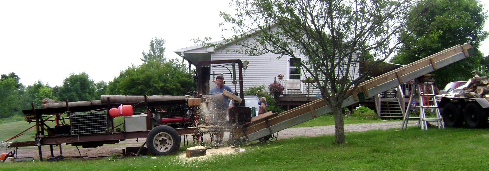
See below image "Woodprocessor Controls"
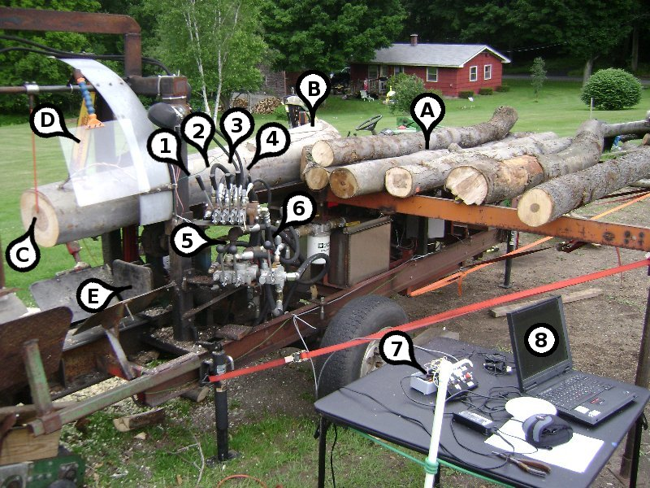
Woodprocessor Controls 1- Log Mandible, 2- Log Advance, 3- Splitter Wedge Select, 4- Chainsaw Cut/Retract, 5- Splitter Ram Advance/Retract, 6- Chainsaw Chain On/Off, 7- Governor Control Box, 8- PID Controller Tuning Computer, A- Log Staging, B- Log Trough, C- Length Indicator, D- Hydraulic Chainsaw, E- Log Splitter
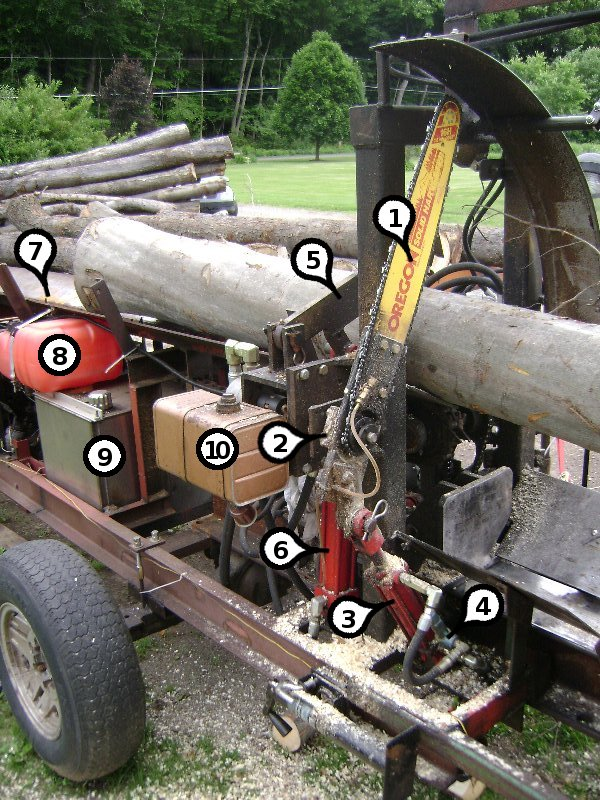
Actuators 1- Hydraulic Chainsaw, 2- Hydraulic Motor (For Chain Movement), 3- Saw Articulation Cylinder, 4- Bypass Valve (Regulates saw engagement force to avoid stalling), 5- Log Mandible, 6- Mandible Articulation Cylinder, 7- Toothed Log Advancement Chain, 8- Diesel, 9- Hydraulic Oil, 10- Chainsaw Bar Oil.
Initially, throttle position was held constant by holding the throttle body against a hard stop. Throttle position was selected for reasonable loaded performance and safe unloaded operation.See http://www.youtube.com/watch?v=np9l8YD36d8 (embeded below) for a video clip of the wood processor in fixed throttle mode. As expected, the engine tends to bog down during heavy loads.
I designed a governor for Rick's wood processor with the objective of maintaining constant engine speed during operation. The governor was designed to act like an automotive cruise control by opening the throttle for more power during heavy cuts and closing the throttle for safe idling when unloaded.
The heart of the throttle governor is a PI controller implemented on an ATMEGA 168 microprocessor. Throttle position is adjusted via servo motor based on engine speed calculated with an optical encoder disc.
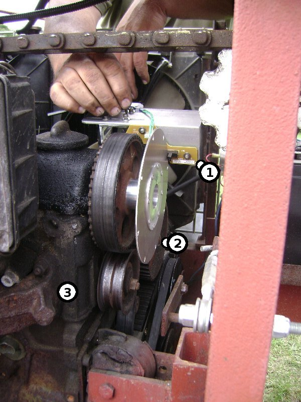
Tachometer for VW Diesel 1- Photogate, 2- 8 Slot Encoder Disc, 3- VW Rabbit Diesel Engine
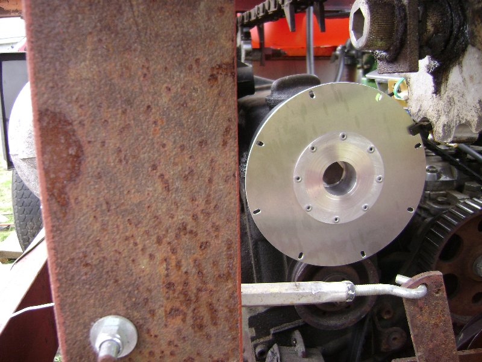 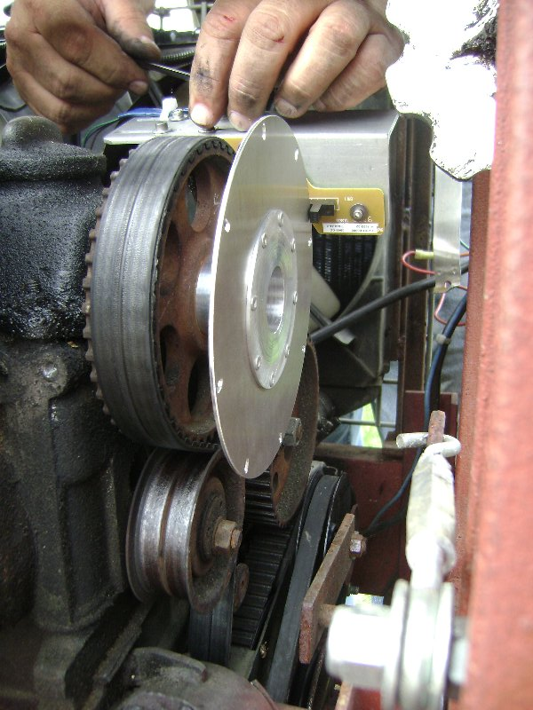
A servo motor was attached to the stock throttle body so that power could be increased during heavy loading.
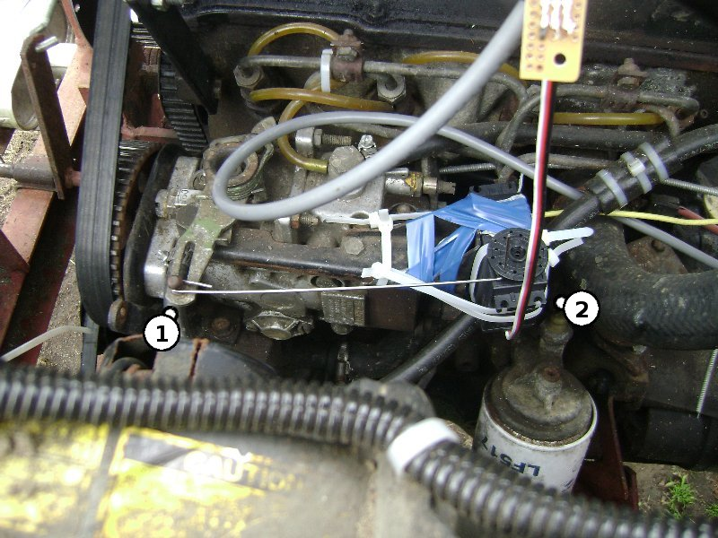
Servo Linkage for Diesel Engine 1- Stock Throttle Body, 2- 15 cm*Kg (13 in*Lb) Water Resistant Servo
A video of the wood processor in action prior to installing the governor. The throttle was set to a single position as all cutting operations were carried out. The throttle must be set low enough to avoid engine damage at idle, but high enough to avoid stalling during peak loading. Notice how the engine tends to bog down during heavy cuts.
Here is a video of the wood processor with the new governor installed.
The governor was designed to easily integrate into Ricks current operating procedure.
In closed loop mode the throttle is automatically adjusted to increase power as needed to maintain constant engine speed.
Failsafes
If Emergency Stop Button is pressed, Engine Stalls, Tachometer Breaks, or Engine exceeds 1800 RPM:
servo is set to 0 and governor is set to open loop mode.
Anti-Windup
As noted in the Arduino code an anti-windup strategy was employed inorder to eliminate poor performance after throttle saturation.
PID Design
A rough system identification was performed on the diesel engine to get an understanding of the open loop system characteristics.
Rough values for Kp and Ki were selected to give stable operation for subsequent tuning operations.
The Ziegler-Nichols approach was used to refine PI values for the final controller design.
Additional safegaurds were implelemented to reduce the risk of damaging the diesel engine after rapid unloading conditions.
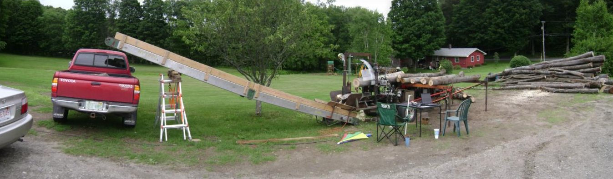
PIDThrottleMyPIDswitch.pde (terribly commented at the moment)
The most elegant and robust solution for adjusting the throttle position or governor setpoint is to use a quadrature encoder. Without an expensive water resistant potientiometer it is difficult to avoid device degredation inherent with an outdoor environment. For this project, I decided to quickly make my own rotary encoder from a mouse and a stepper motor. The stepper provides a really satisfying tactile click when adjusting the setpoint position (although any quadrature encoder could be used for this application).
With a rotary encoder, transitions from open to closed loop mode (and back) are streamlined and simplified. It is possible to ignore absolute encoder position (inherent with single turn potientiometers) and instead measure relative changes in encoder state.
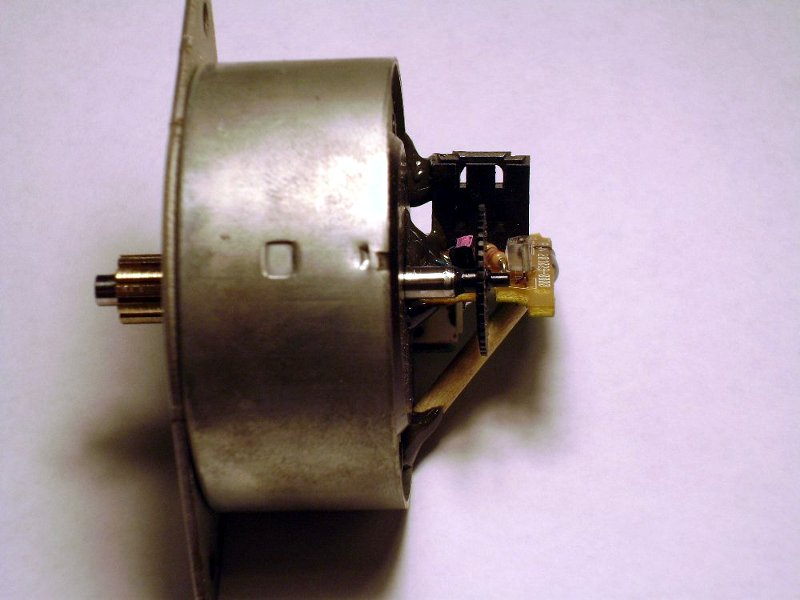 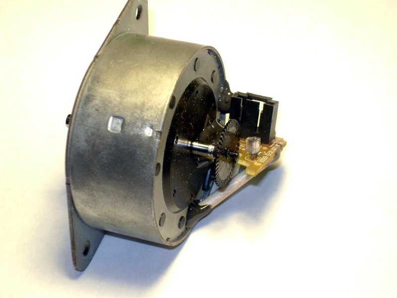
Links to encoder information
http://www.members.shaw.ca/swstuff/mouse.html
http://www.societyofrobots.com/sensors_encoder.shtml
The governor was designed to be as robust as possible, functioning safely even with some broken components.
Broken Tachometer
Indication - Tach LED does not illuminate
Functionality - Governor automatically locks in open loop mode and kills throttle. After governor reset, device will function in open loop mode only.
Broken Rotary Encoder
Indication - Encoder rotation does not effect Servo movement
Functionality- Governor will function properly in open or closed loop mode. The user is limited to the open/ closed loop presets.
Broken Arduino
Indication - No LEDs illuminate
Functionaliy - Servo Resets to 0. Wood processor can be operated in manual throttle mode.
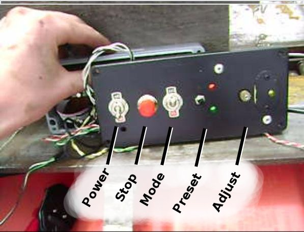